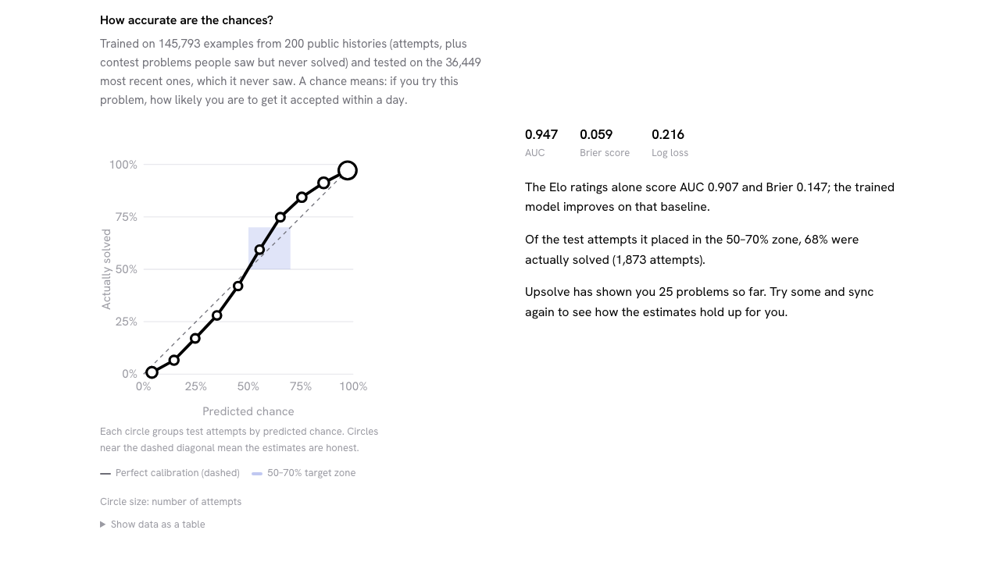
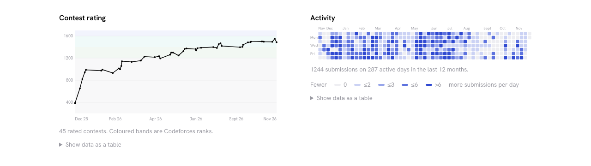
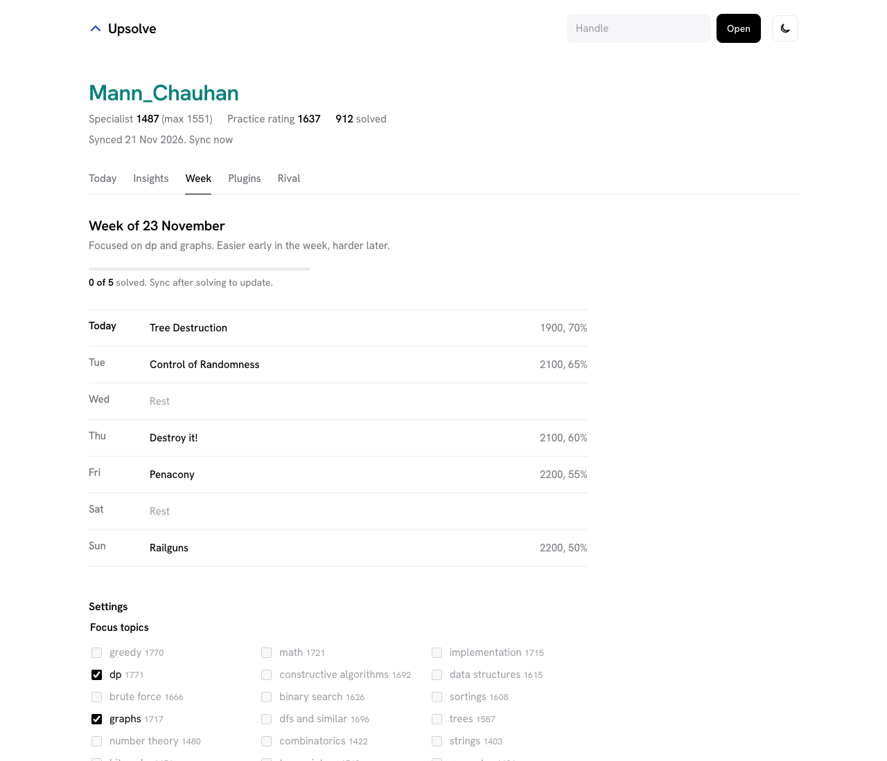
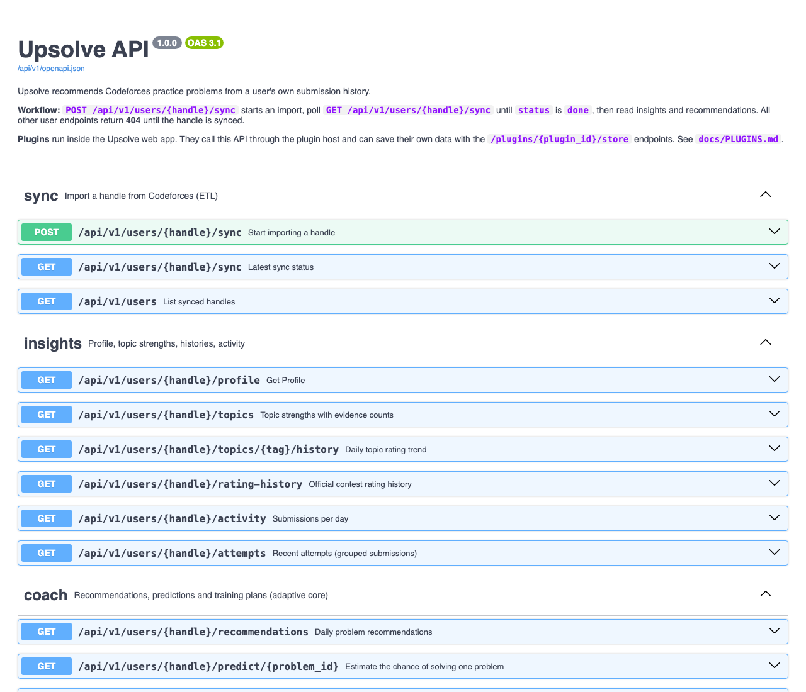

A web application that reads a programmer's public Codeforces history, measures their strength in every topic, and recommends practice problems they have about a 60% chance of solving, with a plain explanation for each choice.
Team: The Syndicate
Ashirvad Dwivedi
265005
Mohit Shankar Pawar
265021
Chaitanya Kumar
265009
Bishal Podder
265008
Live application: https://upsolve.mohitupawar.com
Source code: https://github.com/Wizminar/upsolve
API documentation: https://upsolve.mohitupawar.com/api/docs
November 2026
Contents
Abstract
1Introduction
2System design
3Data engineering (ETL component)
4Machine learning (AI/ML component)
5Visualisation (VIZ component)
6The web application (APP component)
7API and plugins (DEV component)
8Testing and quality
9Results
10Limitations and future work
11Team contributions and AI usage
12Tools, services and references
AAppendix: running the project
Abstract
Competitive programmers improve fastest on problems that are hard but within reach. In practice, most people pick problems that are either too easy to teach them anything or too hard to finish. Upsolve solves this by turning a user's public Codeforces history into a personal practice plan.
The system imports and cleans the user's submissions (ETL), rates the user in every topic with an adaptive Elo model and predicts their chance of solving any problem with a logistic-regression classifier (AI/ML), and presents five daily problems in the 50–70% "stretch zone" together with charts of the user's progress (VIZ). It is a live web application (APP) with a documented REST API and an in-app plugin system for other teams (DEV).
Trained on 182,242 examples from 200 real users and tested on the newest 20% of the data, the model reaches an AUC of 0.947 against 0.907 for Elo alone, and 68% of test problems it placed in the 50–70% zone were actually solved.
Chapter 1
Introduction
1.1 The problem
Codeforces is one of the largest competitive-programming platforms, with a catalogue of more than 11,000 problems. Each problem has a difficulty rating (800 to 3500) and topic tags such as dp, graphs or greedy. Choosing what to practise next is surprisingly hard:
Problems that are too easy feel productive but teach little.
Problems that are too hard are usually abandoned after a long, discouraging attempt.
A single overall rating hides the fact that a user may be strong at greedy problems but weak at graphs.
1.2 Our solution
Upsolve is a practice coach. A user types any public Codeforces handle; no account or password is needed. Upsolve then:
Imports the user's full submission history from the public Codeforces API and cleans it.
Works out a rating for every topic the user has practised.
Predicts the user's chance of solving every unsolved problem.
Recommends five problems a day with a chance of about 50–70%, and explains each choice in plain sentences.
Shows charts of strengths, progress and activity, and builds a weekly training plan.
1.3 Objectives
Objective
How we measure it
Reliable data from a public source
Clean, de-duplicated attempts; incremental updates; respect for the API's rate limit
Accurate, honest chances
AUC, Brier score and calibration on data the model has never seen
Recommendations users can trust
Every pick has written reasons drawn from the model's own inputs
Clear, accessible visualisations
Each chart has a table view, text labels and works without colour
Open to other teams
Versioned, documented REST API and a plugin system used by our cross-dev partners
1.4 How this report maps to the course components
Component
What we built
Chapter
ETL
Codeforces import, cleaning rules, SQLite storage, training dataset
3
AI/ML
Adaptive Elo per topic, logistic regression, evaluation, recommender
4
VIZ
Topic bars, history lines, rating graph, heatmap, calibration chart
5
APP
The website: Today, Insights, Week and Plugins views, hosted online
6
DEV
REST API with OpenAPI documentation, in-app plugin system
7
Chapter 2
System design
2.1 Architecture
Upsolve runs as a single Python program. It serves the website, answers API requests, and runs imports in the background. All data lives in one SQLite database file, and the trained model is a small JSON file of weights.
Figure 2.1 Data flows from the Codeforces API through cleaning, storage and the two models to the recommender, which feeds the website, the API and plugins. Blue outlines mark our own algorithms.
2.2 What happens when a user types a handle
The browser asks the server to sync the handle. The server starts a background job and replies immediately, so the page never freezes.
The job downloads the profile, submissions and contest history, cleans them into attempts and saves them.
The Elo model replays every attempt in time order to produce an overall rating and a rating for each topic.
The page shows live progress. When the job finishes, it requests recommendations.
The server computes features for every candidate problem, asks the classifier for a chance of solving each, scores them and returns five, with reasons.
The Insights and Week views draw their charts from the same data.
2.3 Technology choices
Layer
Technology
Why we chose it
Server
Python, FastAPI, Uvicorn
Simple, typed endpoints, and API documentation generated automatically
Storage
SQLite
A single file; no separate database server to install or run
Machine learning
scikit-learn, NumPy
Standard, well-tested training; fast predictions with plain matrix maths
Data source
Codeforces API via httpx
Free and public, no key needed
Frontend
HTML, CSS, JavaScript
No build step; every chart drawn by our own code as SVG
Testing
pytest
28 tests that run offline on synthetic data
Hosting
Render, custom domains
A public address for the team, partners and examiners
2.4 Key terms in plain words
Term
Meaning in this report
Handle
A Codeforces username, for example tourist.
Submission
One piece of code sent to Codeforces for a problem, with a verdict (accepted, wrong answer, ...).
Attempt
All of a user's submissions to one problem, grouped together. Our unit of learning.
Elo rating
A number that rises when you beat something harder than expected and falls when you lose to something easier. Used in chess; here the "opponent" is a problem.
Logistic regression
A classic machine-learning model that combines several numbers (features) into a probability between 0 and 1.
Stretch zone
Problems with a 50–70% predicted chance of being solved.
AUC
How well the model ranks solved above unsolved problems: 0.5 is guessing, 1.0 is perfect.
Calibration
Whether predicted chances match reality: of problems given 60%, about 60% should be solved.
Chapter 3
Data engineering (ETL component)
ETL stands for Extract, Transform, Load: getting raw data from a source, cleaning it into a useful shape, and storing it. All of Upsolve's knowledge starts here, so the rules in this chapter directly affect the quality of the ratings and predictions.
3.1 Extract
Upsolve uses six methods of the free, public Codeforces API:
API method
What it provides
user.info
Profile: handle, rank, current and best contest rating
user.status
Every submission: problem, verdict, time, programming language
user.rating
Contest rating history, one entry per rated contest
problemset.problems
The full catalogue: 11,526 problems with difficulty and tags
contest.ratingChanges
Which contests were rated for the user
contest.list
Contest dates, used to place problems in time
Rate limiting. Codeforces allows roughly one request every two seconds. Our client waits 2.1 seconds between requests and retries automatically when the API is busy or returns an error.
Background jobs. An import can take a few seconds to a minute. It runs in a worker thread and records its stage (fetching profile, submissions, ratings ...) so the page can show progress.
Incremental sync. Later syncs fetch only submissions newer than the newest one already stored. The problem catalogue is cached and refreshed once a day.
3.2 Transform
Raw submissions are noisy. A user may submit ten times to one problem, hit compilation errors, or meet the same problem twice under different contest numbers. We apply these rules:
Rule
Reason
One attempt per problem
Ten submissions to one problem are one learning event, not ten.
Solved = accepted within 24 hours of the first try
Same-day upsolving counts as success; solving it months later does not say much about the first attempt.
Compilation errors and pending verdicts are ignored
They say nothing about whether the user understood the problem.
Duplicates are removed
Div. 1 and Div. 2 often share a problem; we match on name and difficulty and count it once.
Gym problems and the *special tag are dropped
They have no reliable difficulty rating.
Worked example (illustrative)
Time
Problem
Verdict
Treatment
Mon 10:02
1857G
Wrong answer
Starts the attempt
Mon 10:15
1857G
Compilation error
Ignored
Mon 10:40
1857G
Time limit exceeded
Part of the same attempt
Tue 09:00
1857G
Accepted
Within 24 h of 10:02, so solved
Result: four submissions become one solved attempt on a 2000-rated problem tagged dp, graphs and trees.
3.3 Load
Everything is stored in one SQLite database in WAL (write-ahead logging) mode, which lets the website keep reading while an import is writing. The 13 tables fall into three groups:
attempts, topic_ratings, topic_rating_history, training
Application state
recommendation_log, sync_jobs, plugin_store, meta
3.4 The training dataset
To train the model we needed many users of every level. A script sampled 200 real users from recent rated contests, 20 per 200-point rating band from 800 to 2800, so that beginners and experts are equally represented, and imported their full histories with the same ETL pipeline. The list of handles is published in data/dataset_handles.csv, so the dataset can be rebuilt exactly.
11,526problems in the catalogue
200training users, 800–2800
182,242training examples
13database tables
Chapter 4
Machine learning (AI/ML component)
The machine-learning part answers one question for any user and any problem: what is the chance this person solves this problem? Two models work together. An adaptive Elo model keeps a rating for every topic; a logistic-regression classifier turns those ratings, and other signals, into a calibrated probability. Both run live, every time someone opens a handle.
4.1 Why a chance, and why 60%
Figure 4.1 Predicted chance of solving against problem difficulty, for a real user with contest rating 1487, from Upsolve's trained model. Upsolve recommends problems from the shaded band: hard enough to learn from, close enough to finish.
Learning research and coaching practice agree that progress is fastest on tasks that are challenging but achievable. We turn that idea into a number: a recommended problem should have a 50–70% chance of being solved, with 60% as the ideal. To do this we need chances that are accurate, which is the job of the two models below.
4.2 Model 1: an adaptive Elo rating for every topic
Elo treats each attempt as a game between the user and the problem, whose Codeforces difficulty acts as its rating. The expected result and the update are:
expected = 1 / (1 + 10^((difficulty − rating) / 400))
K = max(16, 80 / sqrt(1 + n)) n = attempts so far
rating = rating + K × (solved − expected) solved is 1 or 0
Solving a hard problem raises the rating a lot; failing an easy one lowers it a lot. K starts large so new users settle quickly, then shrinks so established ratings stay stable. The same update runs for the overall rating and for every topic tag of the problem.
The problem with plain Elo, and our fixes
Plain Elo is fooled by selection bias: people mostly submit to problems they expect to solve, so their practice record is full of wins. For one real user with a contest rating of 1487, plain Elo produced 2238. We made three changes:
Change
What it does
Anchor to the contest rating
The overall rating is the user's contest rating at that time plus a "practice form" offset that fades by 2% per attempt, so practice can move the estimate but cannot drift far from reality.
Topic ratings as offsets
Each topic is stored as an offset from the overall rating. Offsets are re-centred to an evidence-weighted mean of zero, so they describe relative strength (better at greedy than graphs) rather than all rising together.
Implicit failures
In a rated contest the user saw every problem. Problems they never attempted count as unsolved games, which adds the honest failures that practice data lacks.
Rating for the same user
Value
Codeforces contest rating
1487
Plain Elo on practice data
2238
Upsolve's anchored rating
1637
4.3 Model 2: logistic regression
Elo gives one estimate, but it misses useful signals: how much evidence there is for each topic, how recently the user practised, or whether a problem was met during a contest. A logistic-regression classifier combines 11 features into one probability. All features are measured before each attempt, so the model never sees information from the future.
#
Feature
Plain meaning
1
Elo estimate (log-odds)
Model 1's chance, on a scale the classifier can use
2
Gap to overall rating
How much harder the problem is than the user
3
Gap to weakest topic
Difficulty relative to the user's weakest tag on this problem
4
Evidence in the topics
How many past attempts support the topic ratings
5
Past solve rate in the topics
Share of attempts in these topics that were solved
6
Recent form
Solve rate over the most recent attempts
7
Total attempts so far
Overall experience
8
Days since last attempt
Rust after a break
9
Number of tags
Problems mixing many ideas tend to be harder
10
Problem difficulty
The raw Codeforces rating
11
Seen in a contest
Whether the problem was met under contest conditions
When recommending, Upsolve predicts in "seen in a contest" mode, the more conservative of the two, so chances are not over-optimistic.
4.4 Training
Data: 182,242 examples from the 200 training users: real attempts, plus contest problems seen but not attempted.
Chronological split: the oldest 80% (145,793 examples) for training, the newest 20% (36,449) for testing. Splitting by time, not at random, mimics real use: the model always predicts the future from the past.
Procedure: features are standardised, then scikit-learn fits the logistic regression. Weights and scaling are saved to data/model.json.
Live use: the server loads the JSON file and predicts with NumPy. If the file is replaced by a retrained model, the server reloads it automatically; if it is missing, Upsolve falls back to Elo estimates.
4.5 Evaluation
0.947AUC (Elo alone 0.907)
0.059Brier score (Elo alone 0.147)
0.216Log loss (Elo alone 0.488)
68%solved, of 1,873 test problems placed at 50–70%
Metric
What it means
Result
AUC
Probability that a random solved problem gets a higher chance than a random unsolved one. Higher is better.
0.947, against 0.907 for Elo alone
Brier score
Average squared gap between predicted chance and what happened. Lower is better.
0.059, less than half of Elo's 0.147
Log loss
Penalises confident wrong predictions heavily. Lower is better.
0.216, against 0.488
Target-band check
Of test problems the model placed at 50–70%, how many were solved?
68%, inside the promised band

Figure 4.2 Calibration on the test set, as shown inside the app. Each point groups test problems by predicted chance; points close to the diagonal mean the chances are honest.
4.6 The recommender
The recommender turns predictions into a daily list. It considers every unsolved problem near the user's level and gives each a score:
Term
Score
Purpose
Chance inside 50–70%
+1.5
Stay in the stretch zone
Distance from 60%
−4 × |p − 0.6|
Prefer problems closest to the ideal
Matches a focus topic
+1.2
Respect what the user wants to train
Builds a weak topic
+0.8 × weakness
Close gaps
Tried before and not solved
+0.5
Encourage upsolving
Newer contest
+0.4 × recency
Prefer modern problem styles
Small random term
0 to 0.6
Variety from day to day
The five highest-scoring problems are chosen with at most two per topic and one per contest, then shown easiest first. Every shown recommendation is logged with its predicted chance, so later syncs can check how the predictions turned out (the /feedback endpoint).
4.7 Explanations
Each recommendation carries reasons written from the same inputs the model uses, for example:
"60% estimated chance, inside your 50–70% stretch zone"
"Rated 2000, 363 above your practice rating of 1637"
"Matches your training focus: graphs"
"Builds a weaker topic: combinatorics (1422 from 42 attempts)"
This keeps the system transparent: a user can see why a problem was chosen and judge whether to trust it.
Chapter 5
Visualisation (VIZ component)
Every chart in Upsolve is drawn by our own JavaScript as SVG, with no chart library. This kept the design consistent, the pages light, and gave us full control over accessibility. All charts work in both light and dark themes.
5.1 Today: recommendations
Figure 5.1 Today: five problems, each with its predicted chance, difficulty and topics. "Why this problem" expands the reasons. Focus topics appear in blue.
5.2 Insights: strength by topic
Figure 5.2 One bar per topic. Blue marks focus topics, grey marks topics with fewer than five attempts, and a thin line marks the overall rating. Selecting a topic shows its rating history against the overall rating, with key facts and recent attempts.
5.3 Contest rating and activity

Figure 5.3 Left: contest rating over time, drawn over the official Codeforces rank bands. Right: a one-year activity heatmap, one square per day, shaded by number of submissions.
5.4 Design principles
Principle
How it shows up
One message per chart
Each chart answers one question: where am I strong, how have I changed, how often do I practise?
Quiet styling
Thin lines, one accent colour, no 3D or decoration, so the data stands out.
Honest scales
Shared rating scales across topics; rank bands match Codeforces' own colours.
Details on demand
Hover shows exact values; tables give every number.
5.5 Accessibility
Every chart has a written label for screen readers and a "Show data as a table" option.
Colour is never the only signal: ranks carry their name and number, solved attempts carry ✓ and ✗ marks.
Full keyboard navigation with a visible focus outline; arrow keys move through tabs and topics.
Sufficient contrast in both themes; reduced-motion settings are respected.
A script-free text page at /text/<handle> for text-only browsers.
Chapter 6
The web application (APP component)
6.1 User journey
Landing. The user types a handle. No sign-up, no password.
Import. A progress line shows each stage of the sync.
Today. Five problems with chances and reasons; each links to Codeforces.
Insights. Topic ratings, history, contest rating, activity and model accuracy.
Week. The user picks up to two focus topics and a weekly target and gets a plan.
Plugins. Extra pages and panels from other teams, switchable on or off.
6.2 The weekly plan

Figure 6.1 Week: problems start near a 70% chance early in the week and stretch towards 50% by Sunday. Progress updates from real accepted submissions after each sync.
6.3 Interface design
The interface is a quiet, list-based design: one typeface, generous spacing, a single blue accent, and a dark theme by default with a light theme one click away (the switch fades slowly between them). It works down to phone width.
6.4 Deployment
The application is hosted on Render and served at two custom domains, upsolve.mohitupawar.com and upsolve.wizminar.com, managed through Netlify DNS. It can also run on any computer with Python in two commands (see the Appendix).
Free-plan behaviour. The hosted instance sleeps after about 15 idle minutes, so the first visit afterwards takes about 50 seconds. Its disk is temporary, so imported handles may need re-syncing after a restart. The trained model is part of the code and is never lost.
Chapter 7
API and plugins (DEV component)
7.1 REST API
Everything the website does is available through a versioned REST API under /api/v1, with 21 endpoints. FastAPI generates OpenAPI documentation automatically; it is interactive at /api/docs and exported to docs/openapi.json.
Chance for one problem, with feature contributions
GET, PUT
/users/{handle}/training
Focus topics and weekly target
GET
/users/{handle}/plan, /feedback
Weekly plan; how past picks turned out
GET
/topics, /problems, /model, /health
Catalogue, model report, status
GET, PUT
/plugins, /plugins/{id}
Installed plugins; switch on or off
GET, PUT, DELETE
/plugins/{id}/store/{scope}/{key}
Storage for each plugin

Figure 7.1 Automatically generated, interactive API documentation.
7.2 Plugin system
The course asks that cross-dev work runs inside the base application. Upsolve therefore loads plugins into its own page:
A plugin is a folder in plugins/ with a manifest.json and one JavaScript file. No server code and no build step.
Upsolve validates the manifest, loads the file and gives it a host object with an API client, its own storage, events and drawing helpers.
A plugin can add its own tab or a panel on Today, Insights or Week. Each runs in an isolated shadow DOM, so its styles cannot clash and its errors cannot break the app.
Users can switch plugins on or off on the Plugins page.
7.3 Cross-dev
Our cross-dev partner team built Rival, a plugin that runs inside Upsolve using the Upsolve API. It compares a user's topic ratings with a friend's and uses Upsolve's model to find problems the friend solved that the user is likely to solve next. It is documented in the separate Rival cross-dev report.
Figure 7.2 The Plugins page with the Rival plugin installed and switched on.
Chapter 8
Testing and quality
Upsolve has 28 automated tests written with pytest. They run offline on synthetic Codeforces data, so they are fast and do not depend on the real API.
Each training example uses only attempts that happened before it
Model
Training, metrics (AUC, calibration) and the Elo fallback
API
Every endpoint, input validation and helpful error messages
Plugins
Manifest validation, registry and plugin storage
Accessibility
The text-only page renders without scripts
Beyond automated tests, we tested the hosted site with real handles across rating levels, checked every view in both themes and at phone width, and navigated the whole application by keyboard.
Chapter 9
Results
Working product. Upsolve is live and works for any public Codeforces handle.
Honest ratings. Anchoring brought a real user's practice rating from an inflated 2238 to a believable 1637, against a contest rating of 1487.
Accurate chances. AUC 0.947 and Brier 0.059 on unseen data, clearly better than Elo alone (0.907 and 0.147).
Kept its promise. 68% of test problems placed in the 50–70% band were solved.
Open platform. A documented API and plugin system, used by our cross-dev partners to build Rival.
Chapter 10
Limitations and future work
Limitation
Possible improvement
New users with few submissions get rough topic ratings
Borrow strength from similar users; show confidence more prominently
Codeforces' rate limit makes large first imports slow
Share a cache of popular users' data
The model is linear
Try gradient-boosted trees, keeping calibration and explanations
Free hosting sleeps and forgets data
Paid tier or persistent disk; a scheduled keep-alive
Recommendation feedback is only logged
Use it to retrain the model regularly
Chapter 11
Team contributions and AI usage
11.1 Team contributions
Member
Roll no.
Main contributions
Ashirvad Dwivedi
265005
To be filled in by the team
Mohit Shankar Pawar
265021
To be filled in by the team
Chaitanya Kumar
265009
To be filled in by the team
Bishal Podder
265008
To be filled in by the team
11.2 Use of AI tools
To be written by the team. The course requires this section to be written by the team members themselves. Describe which AI tools were used, for which parts of the project, and how their output was checked.
Chapter 12
Tools, services and references
12.1 Third-party tools and services
Tool or service
Used for
Codeforces API
All problem, submission and rating data (free, public)
FastAPI, Starlette, Pydantic, Uvicorn
Web framework, validation and web server
httpx
Calling the Codeforces API
NumPy, scikit-learn
Fitting the logistic regression; fast predictions
SQLite
Storage
pytest
Automated tests
Hanken Grotesk (Google Fonts)
Typeface
Render, Netlify DNS
Hosting and domain records
Our own work: the ETL rules, the anchored Elo model with implicit failures, the feature design, training and evaluation, the recommender and its explanations, every chart, the website, the API and the plugin system.
12.2 References
Codeforces API documentation. https://codeforces.com/apiHelp
Elo, A. E. The Rating of Chessplayers, Past and Present. Arco, 1978.
Pedregosa, F. et al. Scikit-learn: Machine Learning in Python. Journal of Machine Learning Research 12, 2011.
Brier, G. W. Verification of forecasts expressed in terms of probability. Monthly Weather Review 78(1), 1950.
Fawcett, T. An introduction to ROC analysis. Pattern Recognition Letters 27(8), 2006.